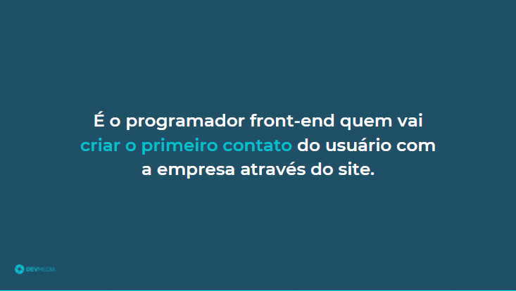
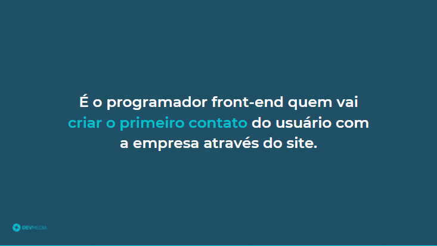

Programação front-end
O front-end possui uma grande importância para uma empresa, veja no flow qual é a sua missão:
O front-end faz a conexão visual entre o usuário e a empresa através de um site
Já entendi que o programador vai criar o site da empresa, mas no que consiste a programação front-end?
O flow abaixo
responde essa pergunta:
Veja na Figura 5 exemplos de elementos que o programador front-end exibe no site.
Figura 5. Exemplos de elementos exibidos em um site
Página do globo.com onde temos o botão menu (ao lado da logo no canto superior esquerdo), o texto Globoplay ao centro, o
ícone do usuário no canto superior direito e a imagem grande ao centro.
Um programador front-end:
- Cria a parte visual de um site.
- Insere botões, textos e imagens na tela.
- Cria a navegação do site.
É através do front-end que o usuário consegue ter uma visão da empresa.
No front-end o usuário consegue conhecer e interagir com a empresa, visualizar informações e comprar um produto.


 
